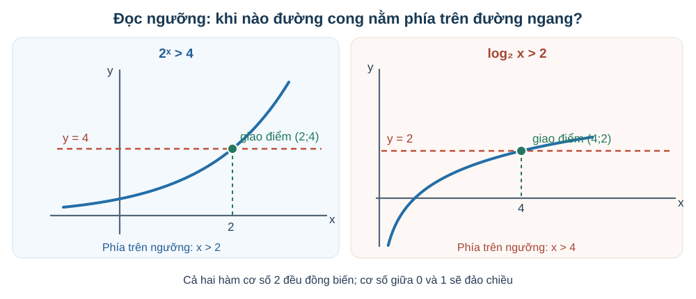

Bài 21. Phương trình, bất phương trình mũ và lôgarit
TOÁN 11 · CHƯƠNG VI · KẾT NỐI TRI THỨC · TẬP HAI
Bốn dạng: phương trình mũ, phương trình lôgarit, bất phương trình mũ, bất phương trình lôgarit. Hiểu cơ số, dấu, miền xác định trước khi giải.
1. Khám phá kiến thức
Em đã biết \(2^3=8\), \(\log_2 8=3\), và hai hàm mũ–lôgarit có thể tăng hoặc giảm theo cơ số. Khi câu hỏi đổi thành “Tìm \(x\) để \(2^x=8\)” hoặc “Tìm \(x\) để \(2^x>8\)”, ta phải tìm nghiệm của phương trình hay tập nghiệm của bất phương trình. Điểm cốt lõi: hàm mũ chỉ cho giá trị dương; lôgarit chỉ nhận đối số dương; bất đẳng thức đảo chiều chỉ vì cơ số làm hàm nghịch biến.
1.1. Phương trình mũ
Xét \(2^{x+1}=\frac14\). Ta có \(\frac14=2^{-2}\), nên hai vế cùng cơ số 2 và \(x+1=-2\), vậy \(x=-3\). Vì sao được so số mũ? Với cơ số \(a>0,a\ne1\), hàm \(a^t\) đơn điệu nghiêm ngặt nên hai số mũ khác nhau không thể cho một kết quả giống nhau. Quy tắc này hoạt động cả khi \(0<a<1\), vì hàm tuy giảm nhưng vẫn nhận mỗi giá trị dương đúng một lần.
Với \(a>0,\ a\ne1\), phương trình \(a^x=b\) chỉ có nghiệm thực nếu \(b>0\), vì \(a^x\) luôn dương. Khi \(b>0\), nghiệm duy nhất \(x=\log_a b\). Chẳng hạn \(10^{x-1}=2022\) không cần tìm cách viết 2022 thành lũy thừa nguyên của 10: lấy log được \(x=1+\log2022\), là biểu thức chính xác; số thập phân bấm máy chỉ gần đúng.
Vận dụng. Giải \(3^{2x-1}=27\); giải thích vì sao \(2^x=-5\) không có nghiệm thực.
Đối chiếu
Lời giải: \(27=3^3\), nên \(2x-1=3\), suy \(x=2\). Còn \(2^x>0\) với mọi số thực \(x\), không thể bằng \(-5\). Không được viết \(\log_2(-5)\) trong số thực.
Kiểm lỗi
Trước khi lấy log của vế phải, phải kiểm nó dương. Nếu hai vế cùng cơ số, hãy so số mũ chứ không chia cơ số như các số hạng bình thường.
1.2. Phương trình lôgarit
Giải \(2\log_2 x=-3\): trước hết \(x>0\); chia hai vế cho 2 thì \(\log_2x=-\frac32\), nên \(x=2^{-3/2}>0\). Chính điều kiện đối số dương cho phép biến đổi sang mũ thực. Nếu bài có nhiều lôgarit, luôn kiểm tất cả các đối số của biểu thức ban đầu, không chỉ biểu thức sau khi rút gọn.
Ví dụ \(\log_3(x+1)=\log_3(x^2-1)\). Điều kiện \(x+1>0,\ x^2-1>0\) cho \(x>1\). So sánh hai đối số được \(x+1=x^2-1\); nghiệm đại số \(-1\) và \(2\), nhưng chỉ \(2\) thỏa điều kiện. Nghiệm \(-1\) là ngoại lai, dù thỏa phương trình sau khi bỏ log.
Bản chất của \(\log_a f(x)=b\) là “cơ số \(a\) phải nâng lên mũ \(b\) để tạo \(f(x)\)”, nên \(f(x)=a^b\). Giá trị \(a^b>0\) làm điều kiện đối số tự được thỏa nếu phép tương đương giữ nguyên các biểu thức; việc ghi điều kiện vẫn đặc biệt cần khi có phép rút gọn hoặc hai log ở hai vế.
Vận dụng. Giải \(4+\log_2(x-1)=6\). Có thể bỏ qua điều kiện \(x>1\) không?
Đối chiếu
Lời giải: Điều kiện \(x-1>0\), tức \(x>1\). Chuyển vế \(\log_2(x-1)=2\), nên \(x-1=4\), \(x=5>1\). Thử \(4+\log_2 4=6\).
Kiểm lỗi
Không tự mở rộng miền xác định sau biến đổi. Với hai log, bắt buộc cả hai đối số dương trước khi dùng tính đơn ánh.
1.3. Bất phương trình mũ
So sánh \(2^u\) và \(2^v\) khác so sánh \((1/2)^u\) và \((1/2)^v\). Vì \(2^x\) tăng, \(2^u>2^v\) khi và chỉ khi \(u>v\). Vì \((1/2)^x\) giảm, \((1/2)^u>(1/2)^v\) khi và chỉ khi \(u<v\). Điều đó giải thích chiều của dấu, thay vì học thuộc quy tắc đảo dấu một cách máy móc.

Bất phương trình \(a^x>b\) có cơ số \(a>0,a\ne1\). Nếu \(b\le0\) thì mọi \(x\) đều thỏa vì \(a^x>0\). Khi \(b>0\), ta so \(a^x\) và \(a^{\log_a b}\): với \(a>1\), \(x>\log_ab\); với \(0<a<1\), \(x<\log_ab\). Các dấu \(\ge,<,\le\) xử lí tương tự theo dấu của \(b\).
SGK minh họa \(2^x>4\) bằng đường ngang \(y=4\): đồ thị \(2^x\) cắt đường ngang tại \((2,4)\), và nằm phía trên nó khi \(x>2\). Hình dưới thêm cách nhìn tương tự cho lôgarit ở mục kế tiếp.

Ứng dụng ô tô: Với mô hình trong SGK \(V(t)=780(0{,}905)^t\) triệu đồng, hỏi khi nào giá trị không quá 300 triệu. Ta giải \((0{,}905)^t\le5/13\); vì cơ số nhỏ hơn 1, suy \(t\ge\log_{0{,}905}(5/13)\approx9{,}6\). Nếu chỉ ghi năm trọn vẹn, mốc đầu tiên là 10 năm, không phải 9 năm.
Vận dụng. Giải \((1/2)^{2x-1}\ge(1/2)^3\) và \(3^x>-2\).
Đối chiếu
Lời giải: Cơ số \(1/2\) nhỏ hơn 1, nên \(2x-1\le3\Rightarrow x\le2\). Còn \(3^x>0>-2\) với mọi \(x\), nên bất phương trình thứ hai có tập nghiệm \(\mathbb R\).
Kiểm lỗi
Đừng lấy \(\log_3(-2)\), vì số âm không phải đối số log hợp lệ. Với hai vế cùng cơ số, chọn đúng chiều tăng/giảm trước khi so mũ.
1.4. Bất phương trình lôgarit
Với \(\log_a x>b\), điều kiện đầu tiên là \(x>0\). Nếu \(a>1\), lôgarit tăng và \(\log_a x>b\) tương đương \(x>a^b\); nếu \(0<a<1\), lôgarit giảm và nghiệm là \(0<x<a^b\). Không thể bỏ \(x>0\) dù kết quả đại số đã được biến đổi.
Đọc khung phải của hình ngưỡng dưới đây. Đường \(y=\log_2x\) cắt đường ngang \(y=2\) tại \((4,2)\). Bên phải \(x=4\), đường cong cao hơn ngưỡng; nên \(\log_2x>2\) có nghiệm \(x>4\). Đừng nhầm với bất phương trình mũ \(2^x>4\), có nghiệm \(x>2\).
Với cơ số nhỏ hơn 1, thử bất phương trình \(\log_{0{,}3}(x+1)\le\log_{0{,}3}(2x-1)\). Điều kiện \(x+1>0,\ 2x-1>0\) cho \(x>\frac12\). Vì hàm log cơ số \(0{,}3\) giảm, bất phương trình đổi thành \(x+1\ge2x-1\), hay \(x\le2\). Kết hợp được \(\frac12<x\le2\). Đây là minh họa điển hình cần cả đảo chiều lẫn giữ miền gốc.
Ứng dụng áp suất: Trong SGK, \(\ln(p/100)=-h/7\), với \(p>0\) (kPa), \(h\) (km). Tương đương \(p=100e^{-h/7}\); độ cao tăng thì áp suất giảm. Với một câu hỏi ngưỡng, cần giải phương trình/bất phương trình bằng \(\ln\) hoặc hàm mũ, vẫn kiểm \(p>0\).
Vận dụng. Giải \(\log_{1/3}(x-1)<\log_{1/3}4\). Vì sao không được quên \(x>1\)?
Đối chiếu
Lời giải: Điều kiện \(x-1>0\), tức \(x>1\). Cơ số \(1/3\) nằm giữa 0 và 1, nên log giảm: \(x-1>4\), suy \(x>5\). Tập nghiệm \(x>5\) thỏa điều kiện.
Kiểm lỗi
Nếu được \(x<5\), em đã không đảo chiều. Đừng chỉ lấy giao điểm đồ thị mà bỏ miền xác định của log.
2. Kiến thức SGK
2.1. Phương trình mũ
Phương trình mũ cơ bản có dạng \(a^x=b\) với \(a>0,\ a\ne1\), trong đó ẩn nằm ở số mũ. Với cơ số hợp lệ, \(a^x\) luôn dương và hàm mũ đơn điệu nghiêm ngặt.
Với \(a>0,\ a\ne1\): nếu \(b>0\) thì \(a^x=b\) có nghiệm duy nhất \(x=\log_ab\). Nếu \(b\le0\), phương trình vô nghiệm thực. Khi biểu thức được xác định, \(a^{u(x)}=a^{v(x)}\Leftrightarrow u(x)=v(x)\).
Chọn phương pháp: Nhận thấy cùng cơ số thì so mũ; nếu vế phải dương nhưng khó viết bằng lũy thừa cùng cơ số, dùng lôgarit để tìm số mũ. Ví dụ \(10^{x-1}=2022\) cho \(x=1+\log2022\).
2.2. Phương trình lôgarit
Phương trình \(\log_ax=b\) với \(a>0,\ a\ne1,\ x>0\), \(b\in\mathbb R\), là phương trình lôgarit cơ bản. Đối số \(x\) phải dương để lôgarit có nghĩa thực.
Với cơ số hợp lệ, \(\log_ax=b\) có nghiệm duy nhất \(x=a^b>0\). Với \(\log_af(x)=\log_ag(x)\), chỉ khi \(f(x)>0,\ g(x)>0\) mới được chuyển thành \(f(x)=g(x)\). Phải lọc nghiệm với điều kiện ban đầu.
Ví dụ điều kiện: \(\log_3(x+1)=\log_3(x^2-1)\) đòi \(x>1\). Phương trình đại số cho \(-1,2\); nghiệm log chỉ là \(x=2\).
2.3. Bất phương trình mũ
Bất phương trình \(a^x>b\) hoặc với các dấu \(\ge,<,\le\), trong đó \(a>0,\ a\ne1\), gọi là bất phương trình mũ cơ bản. Hàm \(a^x>0\) với mọi \(x\in\mathbb R\).
Nếu \(b\le0\), tập nghiệm là toàn \(\mathbb R\). Nếu \(b>0\), với \(a>1\) tập nghiệm \(x>\log_ab\); với \(0<a<1\) tập nghiệm \(x<\log_ab\). Với \(a^x\ge b\), thay dấu nghiêm bằng dấu có bằng. Với \(b\le0\), cả \(a^x<b\) và \(a^x\le b\) đều vô nghiệm. Với \(b>0\), \(a^x<b\) cho \(x<\log_a b\) nếu \(a>1\), và \(x>\log_a b\) nếu \(0<a<1\); dấu \(\le\) xử lí tương tự, lấy cả điểm bằng.
Nếu \(a>1\), \(a^u>a^v\Leftrightarrow u>v\). Nếu \(0<a<1\), \(a^u>a^v\Leftrightarrow u<v\). Dấu thay đổi theo tính đồng biến hoặc nghịch biến, không phải vì biểu thức có chữ mũ.
2.4. Bất phương trình lôgarit
Với \(a>0,\ a\ne1\), dạng cơ bản \(\log_ax>b\) hoặc \(\ge,<,\le\) có điều kiện \(x>0\). Với đối số \(f(x)\), phải giải \(f(x)>0\) trước khi biến đổi.
Với \(a>1\), nghiệm \(x>a^b\). Với \(0<a<1\), nghiệm \(0<x<a^b\). Với dấu \(\ge\), lấy thêm điểm \(x=a^b\). Với \(\log_a x<b\), nghiệm là \(0<x<a^b\) khi \(a>1\), và \(x>a^b\) khi \(0<a<1\); dấu \(\le\) lấy thêm điểm bằng. Luôn giữ điều kiện \(x>0\).
Với \(a>1\), \(\log_au>\log_av\Leftrightarrow u>v>0\); với \(0<a<1\), \(\log_au>\log_av\Leftrightarrow0<u<v\). Các đối số phải đều dương trước khi so sánh.
| Dạng | \(a>1\) | \(0<a<1\) |
|---|---|---|
| \(a^x>b,\ b>0\) | \(x>\log_ab\) | \(x<\log_ab\) |
| \(\log_ax>b\) | \(x>a^b\) | \(0<x<a^b\) |
Hạn chế và khắc phục: Với mũ, \(b\le0\) cần xử lí riêng vì \(a^x>0\). Với log, đối số phải dương trước khi dùng bảng. Khi mô hình có thời gian/năm nguyên, chỉ nhận giá trị thuộc tập thời gian cho phép, không làm tròn thông thường nếu bài hỏi mốc đầu tiên thỏa ngưỡng.
3. Ví dụ
3.1. Phương trình mũ đưa về cùng cơ số
Đề bài. Giải \(3^{x+1}=\frac1{3^{1-2x}}\).
Phân tích: Chuyển vế phải thành lũy thừa cơ số 3; khi hai vế là cùng một lũy thừa với cơ số dương khác 1, được so số mũ.
Lời giải. \(3^{x+1}=3^{2x-1}\Longleftrightarrow x+1=2x-1\), nên \(x=2\).
Kiểm lại: Thế \(x=2\), hai vế đều bằng \(3^3=27\). Không nhầm số mũ âm với dấu trừ ở ngoài.
3.2. Phương trình mũ dùng lôgarit tự nhiên
Đề bài. Giải \(2e^{2x}=5\).
Phân tích: Chia cho 2, kiểm vế phải dương, lấy \(\ln\) vì cơ số \(e\) hợp lệ; sau đó giải phương trình bậc nhất theo \(x\).
Lời giải. \(e^{2x}=5/2>0\), nên \(2x=\ln(5/2)\). Do đó nghiệm \(x=\frac12\ln(5/2)\).
Kiểm lại: \(e^{2x}=e^{\ln(5/2)}=5/2\) nên \(2e^{2x}=5\). Không thay đối số của log bằng số âm.
3.3. Phương trình lôgarit cơ số 10
Đề bài. Giải \(4+3\log(2x)=16\).
Phân tích: Điều kiện gốc \(2x>0\) tức \(x>0\). Trong SGK, \(\log\) không ghi cơ số là log thập phân cơ số 10.
Lời giải. \(\log(2x)=4\Longleftrightarrow2x=10^4\Longleftrightarrow x=5000\). Nghiệm \(5000>0\) thỏa điều kiện.
Kiểm lại: \(\log(10000)=4\) nên \(4+3\cdot4=16\). Không nhầm \(\log(2x)\) với \(\log2\cdot x\).
3.4. Giữ miền xác định khi hai log bằng nhau
Đề bài. Giải \(\log_3(x+1)=\log_3(x^2-1)\).
Phân tích: Trước khi so đối số, giải đồng thời \(x+1>0\) và \(x^2-1>0\), rồi loại nghiệm đại số ngoài miền.
Lời giải. Miền xác định \(x>1\). Khi đó \(x+1=x^2-1\), tức \((x-2)(x+1)=0\). Hai nghiệm đại số \(2,-1\), chỉ \(x=2\) thỏa \(x>1\).
Kiểm lại: Tại \(x=2\), hai đối số bằng 3; tại \(x=-1\), một đối số bằng 0 nên log gốc không xác định.
3.5. Bất phương trình mũ cơ số lớn hơn 1
Đề bài. Giải \(16^x>\frac18\).
Phân tích: Đưa hai vế về cơ số 2, rồi giữ chiều dấu vì \(2>1\).
Lời giải. \(16^x=2^{4x}\), \(1/8=2^{-3}\), nên \(2^{4x}>2^{-3}\Longleftrightarrow4x>-3\Longleftrightarrow x>-\frac34\).
Kiểm lại: Với \(x=0\), bất phương trình đúng; với \(x=-1\), sai. Điểm \(-3/4\) bị loại vì dấu nghiêm ngặt.
3.6. Bất phương trình mũ trong mô hình ô tô
Đề bài. Cho giá trị còn lại \(V(t)=780(0{,}905)^t\) triệu đồng với \(t\ge0\) năm. Khi nào \(V(t)\le300\)? Nếu chỉ tính năm nguyên trọn vẹn, mốc đầu tiên là năm thứ mấy?
Phân tích: Vì \(0<0{,}905<1\), hàm \(V(t)\) giảm, nên khi so với ngưỡng \(5/13\) cần đảo chiều lúc lấy log cùng cơ số.
Lời giải. \(V(t)\le300\Longleftrightarrow(0{,}905)^t\le5/13\Longleftrightarrow t\ge\log_{0{,}905}(5/13)=\frac{\ln(5/13)}{\ln(0{,}905)}\approx9{,}57\) năm. Nếu \(t\) phải là số nguyên không âm, mốc nhỏ nhất là \(t=10\).
Kiểm lại: 9 năm chưa đạt ngưỡng, 10 năm đã không quá 300 triệu. Kết quả thuộc mô hình khấu hao cố định, không phải giá bán thực tế.
3.7. Bất phương trình lôgarit nghịch biến
Đề bài. Giải \(\log_{0{,}3}(x+1)\le\log_{0{,}3}(2x-1)\).
Phân tích: Các đối số gốc phải dương; vì cơ số \(0{,}3\) nhỏ hơn 1 nên dấu \(\le\) đảo thành \(\ge\) khi so đối số.
Lời giải. Điều kiện \(x+1>0,\ 2x-1>0\) cho \(x>1/2\). Hàm log giảm, nên \(x+1\ge2x-1\Longleftrightarrow x\le2\). Kết hợp: \(x\in(1/2,2]\).
Kiểm lại: \(x=2\) được nhận vì hai vế bằng nhau; \(x=1/2\) bị loại vì một đối số bằng 0.
3.8. Lôgarit trong mô hình áp suất khí quyển
Đề bài. Theo mô hình SGK, \(\ln(p/100)=-h/7\), với \(p>0\) kPa và \(h\ge0\) km. Tính \(p\) ở \(h=4\), đồng thời tìm một ngưỡng trên của \(p\) khi \(h>10\).
Phân tích: Đưa log về mũ \(p=100e^{-h/7}\). Hàm mũ cơ số \(e>1\) tăng, nên \(h\) lớn làm \(-h/7\) nhỏ và \(p\) giảm.
Lời giải. \(p=100e^{-h/7}\) kPa. Với \(h=4\), \(p=100e^{-4/7}\approx56{,}47\) kPa. Nếu \(h>10\), thì \(p<100e^{-10/7}\approx23{,}97\) kPa theo mô hình.
Kiểm lại: \(p\) luôn dương. Dấu \(<\) là nghiêm ngặt vì \(h>10\), không đổi thành \(\le\).
4. Lỗi thường gặp và cách tự khắc phục
Mở từng mục để xem dấu hiệu, vì sao sai và cách sửa.
4.1. Lấy log của số không dương
Dấu hiệu: Từ \(2^x=-5\) viết \(x=\log_2(-5)\).
Vì sao sai: Lũy thừa cơ số dương luôn dương, còn log không có đối số không dương.
Cách sửa: Với \(a^x=b\), \(b\le0\) thì vô nghiệm; với \(a^x>b\), \(b\le0\) thì mọi số thực đều thỏa.
4.2. Quên điều kiện trong phương trình lôgarit
Dấu hiệu: Giải \(\log_3(x+1)=\log_3(x^2-1)\) và nhận cả hai nghiệm đại số \(-1,2\).
Vì sao sai: \(x=-1\) làm đối số đầu bằng 0, nên phương trình gốc không xác định.
Cách sửa: Kiểm tất cả đối số dương trước; chỉ nhận nghiệm \(x=2\) thỏa miền \(x>1\).
4.3. Giữ chiều khi cơ số nhỏ hơn 1
Dấu hiệu: Giải \((1/2)^u>(1/2)^v\) thành \(u>v\), hoặc \(\log_{0{,}3}u<\log_{0{,}3}v\) thành \(u<v\).
Vì sao sai: Cả mũ và log cơ số \(0<a<1\) đều nghịch biến, nên phải đảo chiều khi so đầu vào.
Cách sửa: So cơ số với 1 trước khi bỏ hàm, và riêng log phải kiểm điều kiện hai đối số dương.
4.4. Nhầm điểm bằng ngưỡng với cả tập nghiệm
Dấu hiệu: Từ \(2^x>4\) cho chỉ \(x=2\), hoặc từ \(\log_2x>2\) cho \(x>2\).
Vì sao sai: Đồ thị ngưỡng tại \(x=2\) và \(x=4\) tương ứng hai hàm khác nhau. Dấu \(>\) yêu cầu đoạn đường cong cao hơn, không phải đúng giao điểm.
Cách sửa: \(2^x>4\Leftrightarrow x>2\); \(\log_2x>2\Leftrightarrow x>4\). Đối chiếu hai khung hình bên tab Khám phá.
4.5. Lấy sai dấu ngoặc của tập nghiệm
Dấu hiệu: Cho \(x=1/2\) là nghiệm bất phương trình log ví dụ 3.7, hoặc loại \(x=2\).
Vì sao sai: \(x=1/2\) làm đối số bằng 0; \(x=2\) cho hai log bằng nhau và thỏa \(\le\).
Cách sửa: Lấy giao miền xác định với tập sau khi giải, đọc chính xác \((1/2,2]\).
4.6. Làm tròn thời gian mà bỏ điều kiện ngưỡng
Dấu hiệu: Từ \(t\ge9{,}57\) kết luận 9 năm trọn vẹn đủ, hoặc coi mô hình dự báo chắc chắn giá trị xe sau 10 năm.
Vì sao sai: Nếu thời gian tính theo năm nguyên, phải chọn số nguyên đầu tiên thỏa là 10; mô hình còn giả định tốc độ khấu hao không đổi.
Cách sửa: Thử lại hai mốc nguyên 9 và 10, phân biệt thời gian liên tục với số kì trọn vẹn và ghi kết quả là theo mô hình.
Học tiếp: Core và Luyện tập Bài 21 · Tự luận Chương VI · Tự kiểm tra cuối chương.
SGK Toán 11 Kết nối tri thức, tập hai, Bài 21 trang in 20–24: Phương trình mũ; Phương trình lôgarit; Bất phương trình mũ; Bất phương trình lôgarit. Văn bản PDF số hóa đã đối chiếu; ảnh render trang/offset chưa xác minh. Tái sử dụng SVG B21 về hai chiều biến thiên, bổ sung đúng một SVG ngưỡng mũ–lôgarit chỉ cho ý SGK còn thiếu; cả hai đặt sát hướng dẫn đọc ở tab Khám phá và SGK. Core/Luyện tập và Tự kiểm tra giữ nguyên.